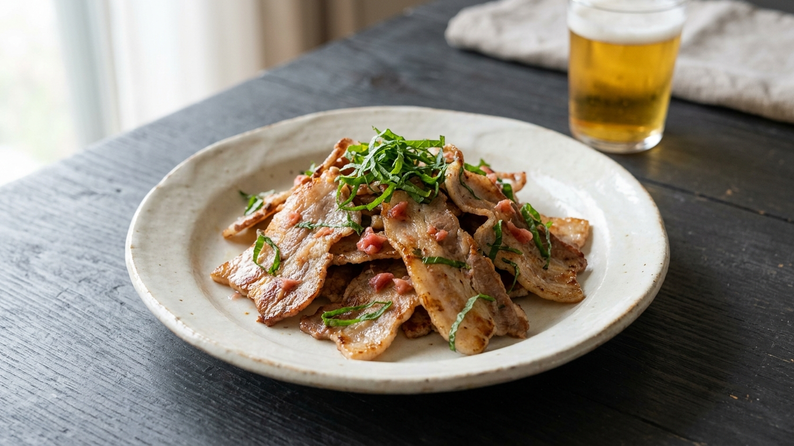

PR｜このページには楽天アフィリエイトの広告リンクが含まれます。
豚バラの梅しそ焼き
豚バラの香ばしさに、梅の酸味と大葉の香り。
小分けの豚肉を、次の晩酌の一皿に。

材料と作り方
おつまみ約2人分の調理案です。梅干しの塩分や大きさに合わせ、少量から調整してください。
- 豚バラ薄切り肉250g
- 梅干し（種を除いてたたく）小1個から
- 大葉（細切り）3〜4枚
- 豚肉は食品表示に従って冷蔵庫で解凍し、食べやすい長さに切ります。
- フライパンに重ならないよう並べ、両面を焼きます。量が多ければ分けて焼き、中心まで十分に火を通します。
- 余分な脂をキッチンペーパーで拭き取ります。火を止めて梅肉を少量ずつ絡め、器に盛ります。
- 大葉を最後にのせて仕上げます。
生肉を扱った器具は、盛り付け用と分けてください。梅・大葉・飲み物は、下記返礼品には含まれません。
材料候補：下妻市の小分け豚バラ
楽天ふるさと納税で紹介されている、茨城県下妻市の「国産豚肉バラスライス」。250g単位の真空包装なので、使うパックを選んで解凍できます。
- 返礼品
- 国産豚肉バラスライス（小分け真空包装）
- 小分け量
- 1パック250g
- 総量の選択肢
- 1kg（4パック）
1.75kg（7パック）
4kg（16パック） - 配送
- 冷凍
- 提供事業者
- （有）マルリンミート
選ぶときは総量だけでなく、冷凍庫の空きと使う頻度も確認を。産地の表記は「国産」であり、茨城県産と断定するものではありません。
楽天で返礼品を確認する（PR）リンクから申し込みが行われると、運営者が報酬を受け取る場合があります。
申し込み前に
- ふるさと納税の寄付による返礼品です。通常の食品購入とは異なります。
- 寄付額・発送予定・配送対象地域・申し込み条件は、楽天の最新の掲載内容をご確認ください。
- 到着日を指定できない返礼品です。今夜使う食材としての即時到着は想定していません。
- このページは食材と調理案の紹介です。税額控除・自己負担額・ポイント付与を保証するものではありません。
仕様確認：2026年9月25日。出典：下妻市の楽天ふるさと納税・返礼品掲載ページ。調理案は晩酌ラボ編集によるもので、自治体や提供事業者の公式レシピではありません。